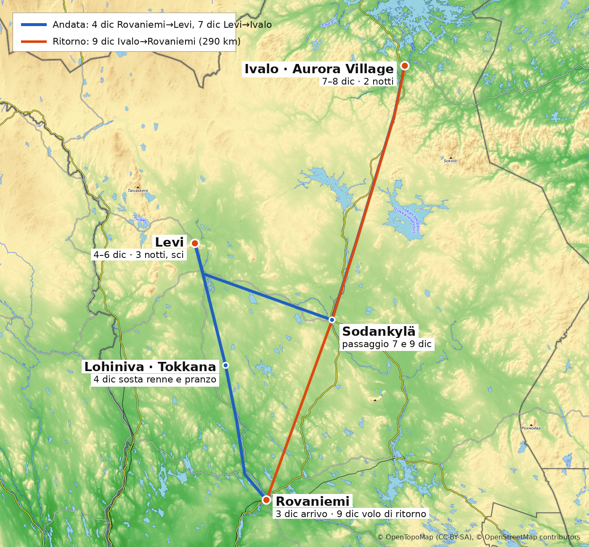

In breve
il viaggio a colpo d'occhioVolo · andata
Roma → RovaniemiMer 3 · 10:40 → 21:05 · Finnair via Helsinki · 1 valigia 23 kg
Volo · ritorno
Rovaniemi → RomaMar 9 · 13:15 → 17:55 · scalo di 45 min a Helsinki
Notte 3
Scandic Rovaniemi CityCentro di Rovaniemi · cena all'Arctic Restaurant
Notti 4 · 5 · 6
Cranberry Levi CenterCasa a Levi, Hissitie 10 · sci e motoslitta
Notti 7 · 8
Aurora Village IvaloAurora Tower Suite · pensione completa · husky, saune, aurora
Auto
AlamoRitiro 3 dic ore 21 · riconsegna 9 dic entro le 12 · ~900 km
Tutta la Lapponia, in un colpo solo
ogni giorno il suo coloreTocca un giorno per zoomare sul suo percorso. La pastiglia scura è il punto di partenza della giornata, i cerchi numerati sono le tappe in ordine.
Le tre tappe sulla carta
rilievi, laghi e la strada 79